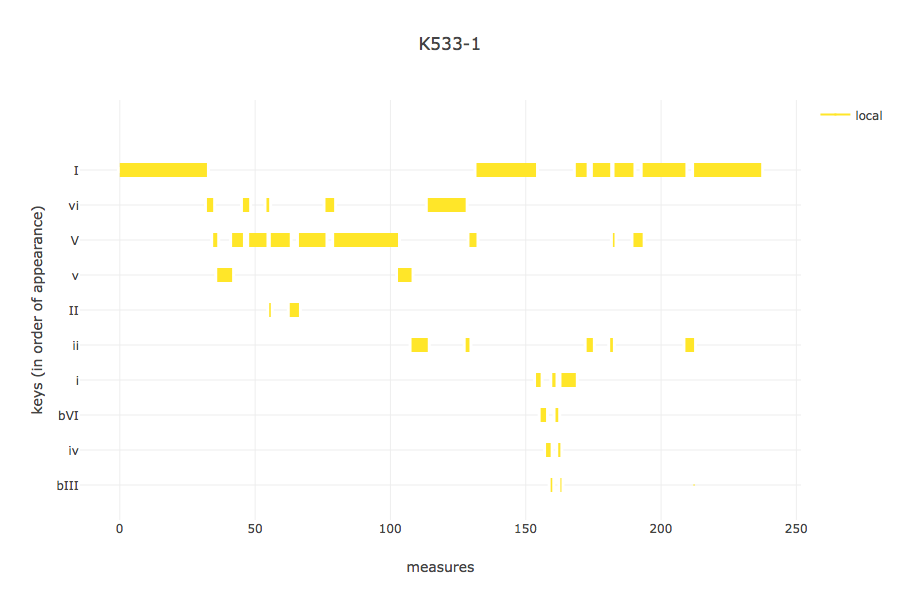
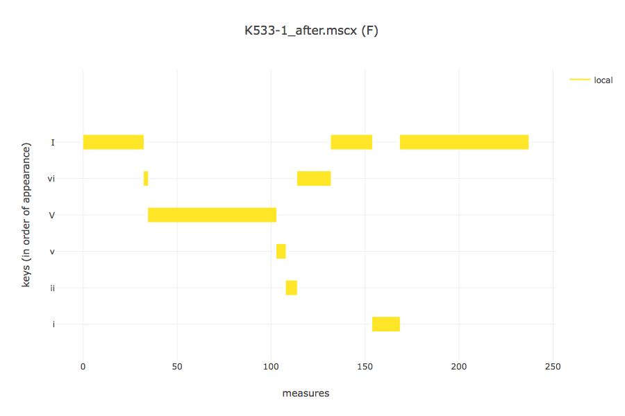

Annotation Reference¶
Introduction¶
Thank you for your interest in the DCML harmony annotation standard. Harmonic analysis is a notoriously complex task, as of now very difficult to teach to a computer. Therefore, we need to rely on hand-annotated data when analyzing the development of tonal harmony over the last five centuries with quantitative methods. With this goal in mind, we have devised an annotation standard for encoding harmonic analyses in a machine-readable format. This document serves as a reference for looking up aspects of its syntax together with some examples. If you want to learn how DCML annotators use MuseScore to enter harmonic analysis directly into digital scores, please refer to our annotation tutorial.
What is it?¶
In its essence, the standard consists of two things: A set of rules for constructing chord labels in a standardized way and this reference on how to apply these labels to music and how to interpret those that you encounter. In this context, we use the words ‘symbols’, ‘chord symbols’, ‘labels’, ‘expressions’, and ‘annotations’ interchangeably. Generally you encounter them in two different contexts: Either when you open a digital score in the XML format of the open-source notation software MuseScore 3, or in the form of an annotation table, that is a table in which each row represents a label and each column one of its properties such as position in the score, the key it occurs in, the chord tones it represents, and its different features. This reference is mainly concerned with explaining what these different properties are.
About this reference¶
Everyone is free to use the proposed standard for encoding harmonic analyses in ways, contexts, and environments of their free choice. The goal of this reference is not to tell anyone how they should analyse harmony. Instead, its purpose is to clarify what the different parts of the syntax are supposed to express in order to allow analysts to communicate their musical interpretations in a precise and consistent manner. The examples and recommendations are supposed to be guidelines that have as a goal to make annotations from different users comparable and interoperable.
The syntax¶
Every chord symbol must have at least one compulsory Roman numeral and may start with an indication of key, followed by a separating dot. Such an indication sets the context for the attached Roman numeral and for all subsequent symbols up to the next indication of key. Phrase annotations represent a separate standard. Therefore they can stand alone, without a chord label, or at the very end of one.
Indication of key.¶
The first symbol written in a score always starts with the absolute indication of the entire piece’s tonality.
Simply type the tonic’s note name {A/a,B/b,C/c,D/d,E/e,F/f,G/g(#/b)} followed by a dot. Examples:
f#.ifor the first harmony of a piece in F sharp minor;Ab.Ifor the first harmony of a piece in A flat major; both pieces beginning with the tonic harmony.All other indications of key (i.e. ‘local keys’) are entered as Roman numerals relative to that.
Example 1: As soon as a piece in C major modulates to G major, you can indicate the new key by typing
V.Iover the harmony of G major. All subsequent Roman numerals up to the next indication of key relate to the new key of G major.There is a way of annotating secondary dominants (see relative key); however, if you find a
V/vichord and the music then stays in the key ofvifor a longer time (cf. next paragraph), you can writevi.Vright away. Every followingisymbol designates the new tonic.
Example¶
I6 ii65/V V7/V V and I6 V.ii65 V7 I (from the Schumann example
below), in general, express the same chords but a preference has to be
given either to the first version - i.e., with applied chords - or
to the second - i.e., with change of local key. In principle, it is
an objective of your analyses to include a bigger picture of a piece’s
tonality through exactly this kind of choices. This means that upon
making such a choice, you need to include the broader context:
If the example passage is a mere tonicization of
Vfollowed by a return to the original tonic, that is a case for the version with applied chords because the local key stays the same. This is the case in the given example. (NBI/Vhas exactly the same meaning asVand, at the end of an authentic cadence should should be the preferred solution.)If, on the other hand, the music continues in the key of V, the second option should be chosen. The general rule is that, in such a modulation, the change of local key should be annotated
at the latest when a chord cannot be interpreted in the old, but in the new key (i.e., where the A# occurs);
as early as consistently possible; so, depending on the context you could even write
V.IV6 ii65 V7 I.
Note
Note that the key indications of applied chords always relate to the
local key (see the following section). So, if the Schumann example
below was not in E major but in A major instead, the same harmonic
progression would be standing in the key of V:
V.I6 ii65/V V7/V I(4)/V with the applied notation
remaining unchanged (/V) because it is relative to the local
key; whereas the change of local key would indicate the
absolute key instead: V.I6 II.ii65 V7 I(4)
Approriate annotation |
Unappropriate annotation |
|---|---|
mm. 4-5 from Schumann’s “Wehmut”, Liederkreis op. 39/9 |
|
{kind=link}
{kind=link}
The rationale behind this logic can be seen in these automated key analyses of two different annotations of the same piece:
With too many changes of local key |
After correction to relative keys |
|---|---|
 |
 |
Gantt chart showing the local keys in the first movement of Mozart’s K. 533 |
|